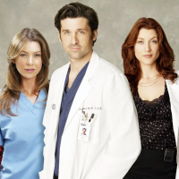
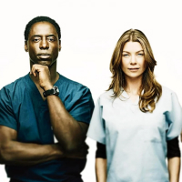

Temporadas
Revive cada momento icónico de Grey's Anatomy a lo largo de sus emocionantes temporadas, llenas de drama, amor y sorprendentes giros que han cautivado a millones de fans.
-
Temporada 1
27 de marzo de 2005
La primera temporada de Grey's Anatomy introduce a los internos del hospital Seattle Grace, liderados por Meredith Grey. A lo largo de estos episodios, los personajes enfrentan los desafíos de la medicina, la presión emocional y los comienzos de relaciones complicadas. Con un enfoque en el crecimiento personal y profesional, esta temporada sienta las bases del drama y la conexión humana que define la serie.
-

Temporada 2
25 de septiembre de 2005
En su segunda temporada, Grey's Anatomy profundiza en los conflictos emocionales y profesionales de los personajes. Destaca el triángulo amoroso entre Meredith, Derek y Addison, mientras Izzie enfrenta un desgarrador romance con Denny Duquette. Además, momentos llenos de drama médico y decisiones difíciles mantienen al hospital Seattle Grace al borde del caos. Esta temporada consolida a la serie como un fenómeno televisivo.
-

Temporada 3
21 de septiembre de 2006
La tercera temporada de Grey's Anatomy explora las consecuencias de decisiones cruciales y revela secretos del pasado. Meredith y Derek intentan definir su relación, mientras Cristina y Burke enfrentan desafíos que ponen a prueba su compromiso. Izzie lucha con la pérdida de Denny, y George vive una inesperada transformación personal. Entre intensos casos médicos y giros emocionales, esta temporada profundiza en los conflictos internos de los personajes.
-

Temporada 4
27 de septiembre de 2007
La cuarta temporada de Grey's Anatomy marca nuevos comienzos y desafíos. Con la partida de Burke, Cristina enfrenta un difícil proceso de adaptación. Meredith y Derek intentan navegar su compleja relación, mientras nuevos personajes como Lexie Grey, la media hermana de Meredith, se integran al equipo del Seattle Grace. Entre tensiones personales y casos médicos impactantes, esta temporada explora la evolución de los personajes en medio del caos del hospital.
-
Ver
más
temporadas!